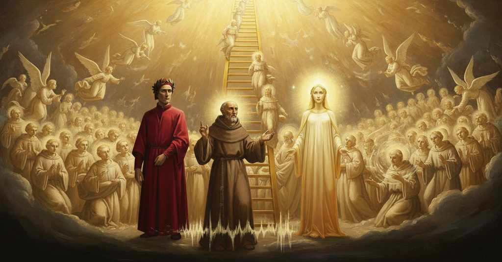

Paradiso — Canto 21

Riassunto Summary 要約
Giunto nel cielo di Saturno, Dante vede una scala d'oro su cui scendono gli spiriti contemplativi; uno di essi, Pier Damiano, gli parla del mistero della predestinazione e della corruzione della Chiesa, prima che tutte le anime emettano un grido assordante.
Arriving in the heaven of Saturn, Dante sees a golden ladder on which contemplative spirits descend; one of them, Peter Damian, speaks to him of the mystery of predestination and Church corruption, before all the souls emit a deafening cry.
土星天に到着したダンテは、観想的な魂たちが降りてくる黄金の梯子を目にし、その一人であるピエトロ・ダミアーノから神の予定の神秘と教会の腐敗について聞かされた後、すべての魂が耳をつんざくような叫び声を上げる。
Segmento 1 1–24
Gli occhi e l'animo di Dante sono di nuovo fissi sul volto di Beatrice. Lei non sorride, e gli spiega che se lo facesse lui verrebbe incenerito come Semele, poiché la sua bellezza si accresce salendo di cielo in cielo e il suo splendore, se non fosse temperato, supererebbe le facoltà mortali del poeta. Beatrice annuncia che sono giunti al settimo splendore, il cielo di Saturno, e invita Dante a preparare la mente e gli occhi a ricevere l'immagine delle anime che stanno per apparire. Dante riflette su quanto gli sia gradito obbedire alla sua guida, contrappesando il piacere di guardarla con quello di seguirne i comandi.
Dante's eyes and mind are once again fixed on Beatrice's face. She is not smiling, and explains that if she did, he would be incinerated like Semele, since her beauty increases as they ascend from heaven to heaven and its splendor, if not tempered, would overcome the poet's mortal faculties. Beatrice announces that they have reached the seventh splendor, the heaven of Saturn, and invites Dante to prepare his mind and eyes to receive the image of the souls who are about to appear. Dante reflects on how pleasing it is to obey his guide, counterbalancing the pleasure of looking at her with that of following her commands.
ダンテの目と心は再びベアトリーチェの顔に注がれる。彼女は微笑んでおらず、もし微笑めば彼はセメレのように灰になってしまうだろうと説明する。なぜなら、天を昇るにつれて彼女の美しさは増し、その輝きが和らげられなければ、詩人の限りある能力を超えてしまうからである。ベアトリーチェは、二人が第七天の輝き、土星天に到着したことを告げ、これから現れる魂たちの姿を受け止めるために心と目を備えるようダンテに促す。ダンテは、彼女を見つめる喜びとその命令に従う喜びとを天秤にかけながら、導き手に従うことがいかに喜ばしいことであるかを省察する。
Segmento 2 25–60
Nel cielo di Saturno, Dante vede una scala d'oro che sale così in alto da non poterne scorgere la fine, e su di essa scendono innumerevoli splendori, paragonati a uno stormo di uccelli. Uno di questi spiriti si ferma vicino a lui, risplendendo intensamente. Dante desidera interrogarlo ma esita, aspettando un cenno da Beatrice. Lei, che legge il suo desiderio inespresso nella mente di Dio, lo incoraggia a parlare. Dante allora rivolge allo spirito due domande: perché gli si è avvicinato tanto, e perché in quel cielo è assente la dolce musica udita nelle sfere precedenti.
In the heaven of Saturn, Dante sees a golden ladder that rises so high he cannot see its end, and upon it descend innumerable splendors, compared to a flock of birds. One of these spirits stops near him, shining intensely. Dante wishes to question it but hesitates, waiting for a sign from Beatrice. She, who reads his unexpressed desire in the mind of God, encourages him to speak. Dante then asks the spirit two questions: why it has drawn so near to him, and why the sweet music heard in the preceding spheres is absent in that heaven.
土星天で、ダンテは頂点が見えないほど高くそびえる黄金の梯子を目にし、その上を鳥の群れになぞらえられる無数の輝く魂が降りてくる。これらの魂の一つが彼の近くで足を止め、ひときわ明るく輝く。ダンテはその魂に問いかけたいと願うが、ベアトリーチェの合図を待ってためらう。彼女は神の御心を通して彼の言葉にならない願いを読み取り、話すようにと促す。そこでダンテはその魂に二つの問いを投げかける。なぜこれほど近くに寄ってきたのか、そしてなぜこの天ではそれまでの天球で聞こえた甘美な音楽が聞こえないのか、と。
Segmento 3 61–105
Lo spirito risponde che nel cielo di Saturno non si canta perché l'udito mortale di Dante non lo sopporterebbe, così come la sua vista non sopporta il riso di Beatrice. Spiega di essere sceso non per un amore maggiore degli altri, ma per obbedienza a un sorteggio divino. Dante allora chiede perché proprio quell'anima sia stata predestinata a quell'incarico. Girando su di sé come una mola, lo spirito replica che la predestinazione è un mistero così profondo da essere inaccessibile a ogni creatura, persino ai serafini. Ordina a Dante di riferire questo al mondo, affinché gli uomini non presumano di comprendere i decreti divini. Umiliato, Dante abbandona la domanda e chiede umilmente all'anima la sua identità.
The spirit replies that there is no singing in the heaven of Saturn because Dante's mortal hearing could not bear it, just as his sight cannot bear Beatrice's smile. It explains that it descended not out of greater love than the others, but in obedience to a divine allotment. Dante then asks why that particular soul was predestined for that office. Spinning on itself like a millstone, the spirit replies that predestination is a mystery so profound as to be inaccessible to any created being, even the seraphim. It orders Dante to report this to the world, so that humans do not presume to understand divine decrees. Humbled, Dante abandons the question and humbly asks the soul its identity.
土星天で歌が聞こえないのは、ベアトリーチェの微笑みに耐えられないのと同じく、ダンテの定命の聴覚ではそれに耐えられないからだと、その魂は答える。他の魂より大きな愛のためではなく、神の配剤への服従によって降りてきたのだと説明する。そこでダンテは、なぜその魂だけがその役目に予定されていたのかと尋ねる。碾き臼のように回転しながら、魂は、神の予定は熾天使でさえも知り得ないほど深遠な謎であると答える。人間が神の定めを分かった気にならぬよう、このことを地上世界に報告せよとダンテに命じる。畏れ入ったダンテはその問いを諦め、恭しく魂にその正体を尋ねる。
Segmento 4 106–126
L'anima si presenta come Pier Damiano, descrivendo l'eremo di Fonte Avellana sul monte Catria. Lì condusse una vita ascetica e contemplativa, sopportando i rigori del clima con pochissimo cibo. Egli lamenta che il suo chiostro, un tempo fecondo per il cielo, sia ora corrotto. Infine, ricorda di essere stato nominato cardinale contro la sua volontà verso la fine della sua vita, e critica quella carica che vede passare di male in peggio.
The soul introduces himself as Peter Damian, describing the hermitage of Fonte Avellana on Monte Catria. There he led an ascetic and contemplative life, enduring the rigors of the climate with very little food. He laments that his cloister, once fruitful for heaven, is now corrupt. Finally, he recalls being made a cardinal against his will towards the end of his life, and criticizes that office, which he sees going from bad to worse.
魂は自らをピエトロ・ダミアーノであると名乗り、カトリア山にあるフォンテ・アヴェッラーナの庵について説明する。そこで彼は、ごくわずかな食物で気候の厳しさに耐えながら、禁欲的・瞑想的な生活を送った。彼は、かつて天国にとって実り豊かであった彼の修道院が、今や堕落してしまったことを嘆く。最後に、彼は人生の終盤に本意ならず枢機卿に任命されたことを思い起こし、悪化の一途をたどるその職を批判する。
Segmento 5 127–142
Pier Damiano conclude la sua invettiva contrapponendo la povertà di Pietro (Cefas) e Paolo alla lussuria dei pastori moderni. Questi sono così pesanti che necessitano di aiutanti per sorreggerli e montarli a cavallo, coprendo con i loro mantelli anche le cavalcature, tanto che sembrano "due bestie sotto una pelle". Al termine delle sue parole, innumerevoli altre anime scendono dalla scala, girando e diventando sempre più belle. Si radunano intorno a lui ed emettono un grido così fragoroso che il narratore, sopraffatto dal suono simile a un tuono, non riesce a comprenderlo.
Peter Damian concludes his invective by contrasting the poverty of Peter (Cephas) and Paul with the luxury of modern pastors. These are so heavy that they need helpers to support them and get them on their horses, covering their mounts with their cloaks as well, so that they look like "two beasts under one skin." At the end of his words, countless other souls descend the ladder, spinning and becoming ever more beautiful. They gather around him and emit a cry so thunderous that the narrator, overwhelmed by the thunder-like sound, cannot understand it.
ピエトロ・ダミアーノは、ペテロ（ケファ）とパウロの清貧な生活と現代の牧者たちの贅沢な暮らしを対比させ、激しい非難を締めくくる。現代の牧者たちは非常に肥満しているため、体を支えたり馬に乗せたりするのに助け手を必要とし、自分の外套で馬をも覆うので、まるで「一つ皮の下に二匹の獣」がいるように見える。彼の言葉が終わると、無数の魂が梯子を下りてきて、回転しながらますます美しくなっていく。魂たちは彼の周りに集まり、非常に大きな叫び声を上げる。語り手はその雷鳴のような音に圧倒され、意味を理解することができない。